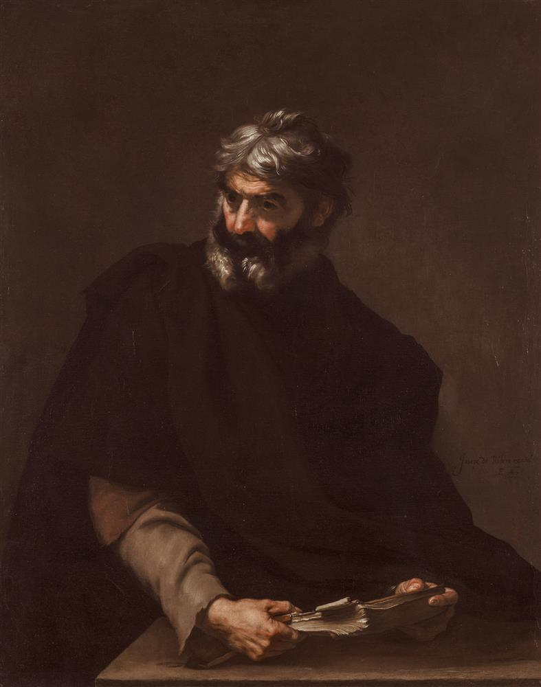
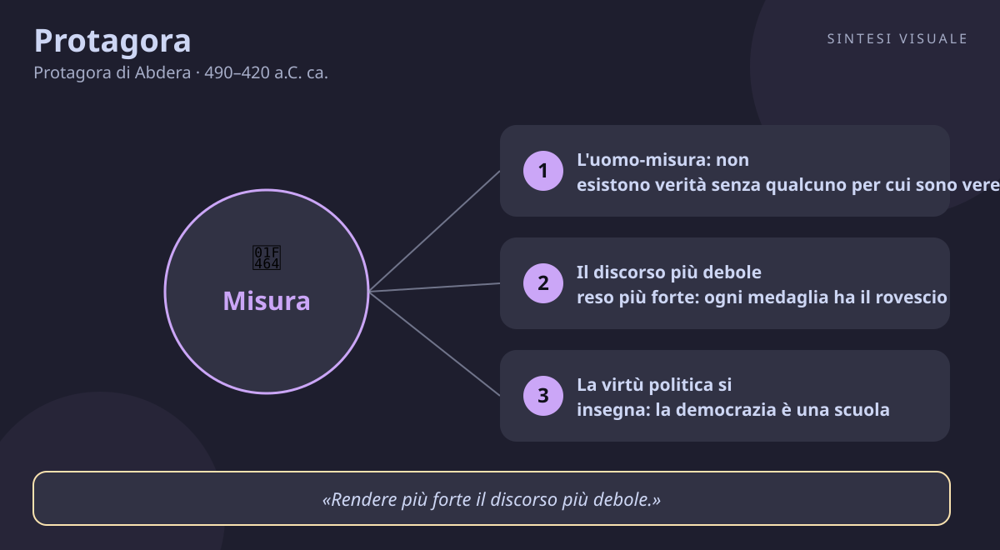

Protagora
Protagora di Abdera · 490–420 a.C. ca.
«L'uomo è misura di tutte le cose»
- Relativismo
- Retorica
- Sofisti
- Democrazia
💬La massima
«L'uomo è misura di tutte le cose: di quelle che sono, che sono, e di quelle che non sono, che non sono.»
— Protagora, fr. 1 DK (DK 80 B 1), incipit dell'opera Verità (detta anche Discorsi rovescianti), riportato in Platone, Teeteto, 152a
Protagora non dice che ognuno può inventarsi la realtà a capriccio: dice qualcosa di più sottile. Prendi il vento: lo stesso soffio sembra freddo a chi è accaldato e tiepido a chi ha freddo — e nessuno dei due si sbaglia, perché il «freddo» non sta nel vento da solo, sta nell'incontro tra il vento e chi lo sente. È l'esempio che Platone stesso usa nel Teeteto per spiegare la tesi. Generalizza: bene e male, giusto e ingiusto, vero e falso non esistono scritti nel cielo, esistono nella relazione tra le cose e gli uomini che le giudicano.
La frase si presta a tre letture, tutte serie: quella del singolo (ogni percezione è vera per chi la prova), quella della comunità (ogni popolo ha usi, leggi e dèi diversi, e nessuno può dimostrare che i propri siano quelli «veri»), e quella democratica, la più nobile — se nessuna opinione è assoluta, allora bisogna ascoltare le opinioni altrui e decidere discutendo, non imponendo. È il fondamento filosofico della democrazia: il dibattito aperto al posto del dogma.
👤Biografia
Protagora nasce ad Abdera, sulla costa della Tracia, intorno al 490 a.C., figlio di un certo Artemone (o Meandrio, le fonti oscillano). Abdera era una ricca colonia ionica, famosa per i commerci e per aver dato i natali anche a Democrito. Una leggenda tarda — raccontata da Aulo Gellio e ripresa da Diogene Laerzio, ma cronologicamente impossibile — vuole che da giovane facesse il facchino e che Democrito, colpito dall'ingegno geometrico con cui legava le fascine, lo avesse preso con sé: prendila come un bel romanzo, non come storia.
La verità documentata è più interessante: Protagora è il primo a presentarsi apertamente come «sofista», cioè maestro a pagamento di sapienza politica (Platone, Protagora, 316c-317b), e gira per la Grecia insegnando retorica ai giovani ambiziosi per compensi altissimi — secondo Diogene Laerzio chiedeva cento mine a corso, una fortuna. Ad Atene soggiorna più volte negli anni di Pericle, di cui diventa amico e consigliere: Plutarco racconta che i due passarono un'intera giornata a discutere di chi fosse responsabile della morte di un atleta colpito per caso da un giavellotto — il giavellotto, chi lo lanciò o gli organizzatori dei giochi? Nel 444 Pericle gli affida la stesura delle leggi per Turi, la nuova colonia panellenica nel Sud Italia: il filosofo-legislatore, un incarico concretissimo.
Platone nel Menone (91e) dice che praticò la sofistica per quarant'anni e morì intorno ai settant'anni: la data di morte cade perciò verso il 420 a.C. Una tradizione tarda parla di un processo per empietà ad Atene, di libri bruciati in piazza e di fuga su una nave naufragata — ma gli studiosi moderni la considerano quasi certamente una leggenda inventata dai suoi nemici. Di carattere doveva essere brillante, sicuro di sé e provocatorio: l'uomo che insegnava a «rendere più forte il discorso più debole» non temeva di risultare antipatico ai benpensanti.
📌Sintesi del pensiero
Protagora sposta la filosofia dal cielo alla città: non più l'origine del cosmo, ma l'uomo, la parola e la convivenza. Tre pilastri: il relativismo dell'uomo-misura (ogni giudizio è vero per chi lo formula); la retorica come arte del contraddittorio (ogni questione ha due discorsi opposti, e saperli sostenere entrambi rende liberi); la politica come virtù insegnabile (la convivenza democratica si impara, e le leggi scritte dagli uomini sono la sua forma più alta). Sapere, per lui, è saper discutere e saper convivere.
🏛️I temi fondamentali
- L'uomo-misura: non esistono verità senza qualcuno per cui sono vere. Il vento freddo, il cibo amaro per il malato e dolce per il sano, la stessa legge giusta per Atene e ingiusta per Sparta: tutto ciò che diciamo «è così» è sempre «così per qualcuno». Esempio concreto: due colleghi leggono lo stesso messaggio del capo — uno lo trova secco e ostile, l'altro diretto ed efficiente. Protagora direbbe che non c'è un «tono vero» nascosto nel testo: c'è l'incontro tra il testo e la storia di ciascuno, e litigare su chi ha «capito bene» è una perdita di tempo.
- Il discorso più debole reso più forte: ogni medaglia ha il rovescio. Protagora insegnava a sostenere con pari forza le due tesi opposte su qualunque argomento — le antilogie — perché solo chi conosce le ragioni dell'avversario sa davvero difendere le proprie. Esempio concreto: prima di chiedere un aumento, prepari anche tutti gli argomenti con cui il capo potrebbe dirti di no — costi, tempi, colleghi — e arrivi al colloquio con le risposte già pronte. Non è furbizia: è il metodo protagoreo, e funziona nelle trattative come nei processi.
- La virtù politica si insegna: la democrazia è una scuola. Nel dialogo platonico Protagora il sofista racconta il mito di Prometeo: Zeus distribuisce a tutti gli uomini, non solo a pochi, il pudore e la giustizia, perché senza di essi nessuna città può reggere. Perciò tutti possono imparare a essere cittadini — e infatti Atene chiede il parere di tutti in assemblea. Esempio concreto: un'assemblea di condominio dove anche l'inquilino più timido può imparare a prendere la parola, leggere un bilancio e votare con cognizione: per Protagora quella non è perdita di tempo, è la virtù democratica che si allena esattamente come un muscolo.
- L'agnosticismo onesto: dire «non so» è sapienza. Sulla questione più scottante — gli dèi — Protagora dichiara apertamente i limiti della conoscenza umana invece di fingere certezze. Non è ateismo militante né fede cieca: è l'umiltà epistemica di chi accetta che alcune domande superino le nostre forze. Esempio concreto: il buon medico che davanti a sintomi ambigui dice «non lo so ancora, facciamo altri accertamenti» invece di sparare una diagnosi per non sembrare incerto — sta praticando l'agnosticismo di Protagora, e i pazienti dovrebbero premiarlo, non punirlo.
📚Le opere principali
- Verità (detta anche Discorsi rovescianti; V secolo a.C., opera perduta, nota per frammenti e citazioni). Si apriva con la massima dell'uomo-misura. Tesi centrale: ogni giudizio è vero per chi lo formula, perciò la «verità» assoluta è un'illusione e il sapere è confronto di prospettive. Conta perché è il manifesto del relativismo occidentale: Platone le dedica il Teeteto per confutarla, e da duemilaquattrocento anni nessuno ha smesso di discuterla.
- Antilogie (in due libri; perdute). Raccolte di coppie di discorsi opposti sullo stesso tema: il manuale pratico del contraddittorio. Tesi centrale: su ogni questione esistono due argomenti contrapposti, ed esercitarsi a sostenere entrambi rende padroni della discussione. Contano perché fondano l'insegnamento della retorica e del dibattito — ogni corso moderno di public speaking e ogni club di debate ne è l'erede diretto.
- Sugli dèi (perduta; incipit conservato da Diogene Laerzio, IX, 51). Si apriva con la celebre dichiarazione di agnosticismo. Tesi centrale: sulla natura divina la ragione umana non può pronunciarsi con certezza. Conta perché è la prima professione di agnosticismo della storia: inaugura l'idea che sospendere il giudizio, in certi casi, sia più razionale che schierarsi.
- Sullo stato originario delle cose (perduta; il contenuto è riassunto nel mito narrato nel Protagora di Platone, 320c-322d). Conteneva il mito di Prometeo e della distribuzione universale del senso di giustizia. Tesi centrale: la civiltà nasce dalla tecnica ma regge solo sulla virtù politica condivisa. Conta perché è la prima difesa filosofica della democrazia: se la giustizia è di tutti, il governo deve essere di tutti.
💬Massime celebri
«L'uomo è misura di tutte le cose: di quelle che sono, che sono, e di quelle che non sono, che non sono.» (Verità, fr. 1 DK, in Platone, Teeteto, 152a). Conta perché è la frase-simbolo del relativismo: obbliga chiunque parli di «verità assoluta» a fare i conti con il punto di vista di chi giudica.
«Intorno agli dèi non posso sapere né che sono, né che non sono, né quale sia il loro aspetto: molte cose lo impediscono, l'oscurità dell'oggetto e la brevità della vita umana.» (Sugli dèi, fr. 4 DK, in Diogene Laerzio, Vite dei filosofi, IX, 51). Conta perché è il modello eterno dell'onestà intellettuale: il primo «non lo so» documentato della filosofia, da mandare a memoria contro ogni fanatismo.
«Rendere più forte il discorso più debole.» (DK 80 B 6b; la formula è discussa da Aristotele, Retorica, II, 24). Conta perché è il cuore del mestiere dell'avvocato, del negoziatore e del debater: saper difendere anche la causa sfavorita è la prova che hai capito davvero la questione.
⌛Contesto storico
Protagora vive nell'Atene del V secolo a.C., la città più eccitante del mondo antico. Nasce intorno al 490, l'anno in cui i Greci fermano i Persiani a Maratona; cresce mentre Atene, guida della lega di Delo, si riempie del tributo degli alleati e Pericle la trasforma in un cantiere di marmo e idee: il Partenone sorge tra il 447 e il 438, Sofocle mette in scena le tragedie, Erodoto racconta le guerre persiane e i giovani discutono in piazza. È l'età dell'oro della democrazia radicale: l'assemblea vota le leggi, i tribunali popolari giudicano con centinaia di giurati sorteggiati, le cariche si estraggono a sorte — e in questo meccanismo la parola è potere puro.
Chi sa parlare conquista cariche, vince cause, orienta la città: ecco perché i sofisti, maestri itineranti di retorica, diventano richiestissimi e ricchissimi. Ma è anche un mondo fragile: nel 431 scoppia la guerra del Peloponneso contro Sparta, nel 430 la peste devasta Atene e uccide lo stesso Pericle nel 429. Protagora muore intorno al 420, senza vedere la catastrofe finale del 404, ma respirando già l'aria avvelenata delle fazioni e dei processi politici.
I movimenti che lo formano sono la filosofia della natura che lo precede — Eraclito con il tutto che scorre, Parmenide e gli Eleati con l'essere immutabile, Democrito concittadino con gli atomi — contro i quali Protagora opera la svolta: basta cosmologia, al centro va l'uomo. E i movimenti che lui trasmette sono immensi: provoca Socrate e Platone, che gli dedicano due dialoghi per confutarlo senza mai liberarsene; fonda con Gorgia e gli altri sofisti l'arte retorica, tramandata da Isocrate e poi da Cicerone e Quintiliano; e consegna ai posteri il relativismo, l'agnosticismo e l'idea che la democrazia viva di dibattito.
🌊L'eredità
Platone è il primo erede, suo malgrado: dedica a Protagora due dialoghi — il Protagora e il Teeteto — e per confutarlo è costretto a costruire la teoria delle Idee, quasi che senza il sofista non ci sarebbe il platonismo. Aristotele raccoglie il guanto nella Metafisica, demolendo l'uomo-misura con il principio di non contraddizione, ma salvando la retorica come arte seria. Gli scettici antichi — Pirrone e poi Sesto Empirico — fanno di Protagora un padre nobile: sospendere il giudizio, dicono, è esattamente ciò che il sofista insegnava.
A Roma l'eredità passa per le aule dei tribunali: Cicerone e Quintiliano trasformano le antilogie in metodo scolastico, e per secoli gli studenti imparano a perorare il pro e il contro. L'Umanesimo riscopre il motto — l'uomo al centro — e l'Illuminismo ne fa un'arma di tolleranza: se ogni popolo ha le sue leggi, nessun popolo può dirsi eletto. Nella modernità Protagora rinasce ovunque: nel pragmatismo americano, che giudica le idee dai loro effetti su chi le vive; nell'antropologia culturale, che vieta di giudicare una civiltà con la misura di un'altra; nell'ermeneutica e nel dibattito sul postmoderno, dove il suo fantasma aleggia su ogni discussione su «fatti» e «interpretazioni»; e nella teoria democratica, che vede nella sua lezione — ascoltare l'avversario perché potrebbe avere la sua parte di ragione — la regola d'oro della convivenza.
🌍Esempi di oggi
- La recensione del ristorante. Tu dai cinque stelle alla trattoria rumorosa perché ti ricorda le domeniche in famiglia, l'amico ne dà due perché cercava silenzio per lavorare: avete mangiato gli stessi piatti, ma giudicato pasti diversi. La massima in azione: smetti di chiederti «chi ha ragione» e capisci che il gusto — come il freddo del vento — vive nell'incontro tra la cosa e chi la prova.
- Il gruppo di quartiere che decide. Nel gruppo social del palazzo c'è chi vuole le telecamere e chi le teme per la privacy: invece di insultarsi, un amministratore protagoreo fa esporre a turno le due ragioni, le scrive in un documento condiviso e indice un voto motivato. La democrazia deliberativa di Turi, quattordici secoli prima dei sondaggi online: la decisione è legittima perché tutti sono stati misura della decisione.
- Il «non lo so» che salva. Davanti a una diagnosi incerta, a un investimento rischioso o a una notizia clamorosa, la tentazione è fingere certezza per fare bella figura; il professionista serio dice «non ho elementi sufficienti, verifichiamo». È l'agnosticismo di Protagora applicato alla vita quotidiana — e vale oro, perché ogni certezza ostentata a sproposito è una futura figuraccia (o un danno vero) che si poteva evitare.
📄
# Protagora — «L'uomo è misura di tutte le cose»
Buongiorno! Oggi incontriamo il primo professionista del pensiero: un greco di provincia che arrivò ad Atene senza raccomandazioni, si fece pagare profumatamente per insegnare a parlare in pubblico e lanciò la frase più scandalosa della filosofia antica — che la verità dipende da chi la guarda. Il ritratto qui sopra è il Protagora dipinto da Jusepe de Ribera nel 1637: un vecchio dal volto scavato e dallo sguardo obliquo, metà sapiente e metà furfante, proprio come i suoi nemici lo descrissero.
🧠Quiz
1 La massima «L'uomo è misura di tutte le cose» apre l'opera di Protagora intitolata:
2 Nell'interpretazione più immediata (quella che ne dà Platone nel Teeteto), la tesi significa:
3 Pericle affidò a Protagora un incarico concretissimo:
4 L'incipit agnostico Sugli dèi afferma:
5 Chi sottopose l'uomo-misura alla critica più sistematica, dedicandole gran parte del Teeteto?
Rispondi in chat con es. 1B 2A 3C 4D 5A (usa «-» per le risposte che salti): correggo e ti do il punteggio con un ripasso mirato!
✅Soluzioni — tocca per vedere
1B – 2B – 3A – 4B – 5C.
🔁Ripasso
- Verità e la massima: l'opera si apriva con l'uomo-misura (fr. 1 DK, citato nel Teeteto, 152a). Se hai sbagliato la 1, rileggi la sezione «La massima».
- Relativismo protagoreo: ogni cosa è per ciascuno come gli appare (l'esempio del vento). Se hai sbagliato la 2, rileggi il secondo capoverso della «Massima» e il primo dei «Temi fondamentali».
- Turi e Pericle: nel 444 Protagora scrisse la costituzione della colonia di Turi. Se hai sbagliato la 3, rileggi la «Biografia breve».
- Agnosticismo: «non posso sapere né che sono, né che non sono» — né ateismo né fede, ma limite dichiarato. Se hai sbagliato la 4, rileggi il quarto tema e le «Massime celebri».
- Platone critico ed erede: il Teeteto confuta l'uomo-misura e insieme lo rende immortale. Se hai sbagliato la 5, rileggi «Eredità».
🖼️In un colpo d’occhio

Tocca l’immagine per ingrandirla.